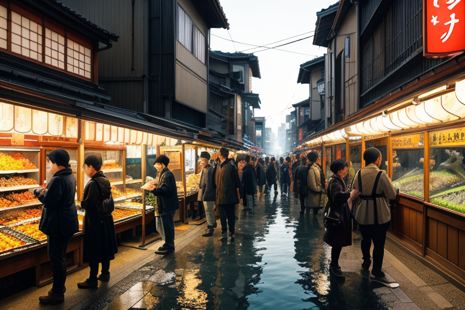
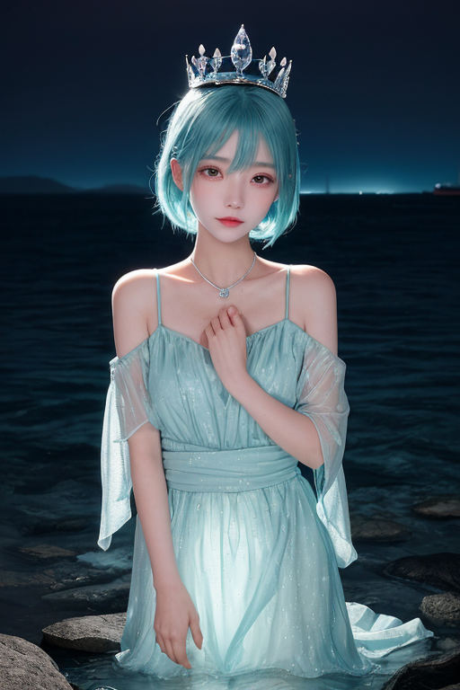
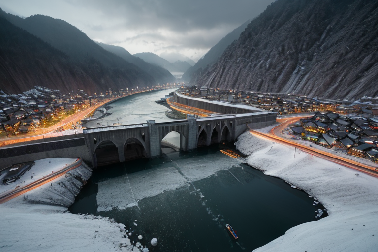
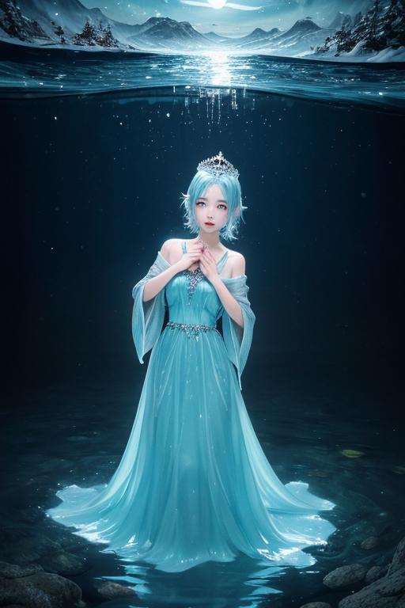
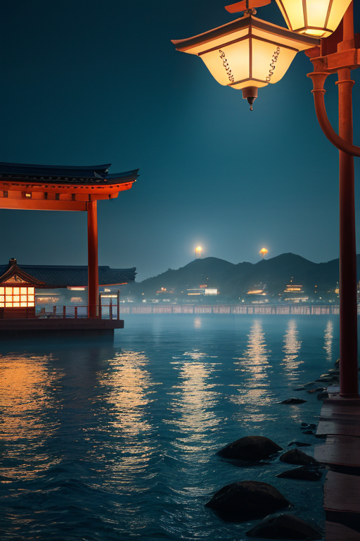

第一章 現実の富山
あなたはまだ気づいていない。この土地にも、王がいることを。
富山湾に面した市場は、朝の光を反射して銀色に輝いていた。氷見から水揚げされたブリが氷の上に並び、ホタルイカの青白い蛍光が薄暗い水槽の中で微かに揺れる。薬売りの行商人が声を張り上げ、ます寿司の店先には列ができている。ここは、北前船がもたらした交易の記憶が、金と物の流れとして今も脈打つ場所だ。活気と欲望、人の熱気が複雑に絡み合い、地面の下では見えない歪みが蓄積されつつあった。
その喧噪のただ中に、彼は立っていた。トヤマリア・アクア。透明な水のような姿は、人々の目には映らない。彼の目には、賑わいの下を流れる地下水脈の濁り、地盤の微かな軋みが、色の濃淡として見えている。妖精アクエリスが彼の足元を、清冽な水流のように旋回する。歪みはまだ小さい。だが、商いの熱狂が増すほど、土地は無理を強いられる。
彼は純粋に、真実を好む王だ。歪みを前に、一つの問いが心をよぎる。透明であること——それは、誰にも気づかれずに調整を続ける強さなのか。それとも、誰の感謝も得られない脆さなのか。彼は答えを知らない。ただ、今ここにある歪みを、静かに整える役目を、彼は知っている。

第二章 歪みの兆候
富山湾を臨む港町の夜は、ホタルイカの漁火と、コンテナ船の明かりでざわめいていた。北前船の時代から続く、金と物の流れ。その活気の底で、アクエリスが伝える水脈の軋みは確かに増していた。地下水の汲み上げが過剰になり、伏流水のバランスが微妙に崩れ始めている。それは、商都の繁栄が土地に刻む、目に見えない負債の記録だった。
トヤマリア・アクアは、雨晴海岸の岩場に立つ。彼の目には、人の欲望が引き起こす地盤の微かなたるみが、淡い歪みの光として映る。彼は手を伸ばす。指先から滲む透明な力が、歪みの広がりをほんの少し押しとどめ、次の汲み上げが行われるまでの時間を、僅かに稼いだ。誰にも気づかれない調整。感謝も報酬もない仕事。
「透明であることは強さか」
問いは、彼の中で静かに反響する。強さとは、気づかれぬことによって、持続できることなのか。それとも、誰の目にも映らぬ働きは、いつか消えてしまっても構わないものとみなされる脆さの表れなのか。彼にはまだわからない。ただ、今、ここでなすべきことがあるだけだ。

第三章 王の葛藤
黒部ダムの巨大なコンクリート壁は、人間の欲望と自然の力が拮抗する場だった。トヤマリアはその頂に立ち、眼下に広がる人造湖を見下ろす。この水は電力となり、富を生み、商都の活気を支える。同時に、山肌を削り、水脈を変え、目に見えない歪みを蓄積していた。
「歪みは、増幅しています」
妖精タテヤミアが、雪壁のように冷たい声で報告する。水源を守る彼女には、開発の熱に混じる危うい軋みが聞こえる。トヤマリアは手を伸ばす。掌から滲む透明な力が、ダム湖の水圧を微かに分散させ、岩盤にかかる負荷をほんの少し和らげる。
富山湾を往く北前船の時代から、この地は交易で栄えた。人の欲望は水のように流れ、山を切り拓き、海を埋め立てる。トヤマリアの役目は、その流れを止めることではない。暴走を防ぎ、持続可能な均衡点を探ることだ。
しかし、透明であるがゆえに、彼の働きは誰の目にも留まらない。巨大な開発の波の前で、微調整など無意味に見える瞬間がある。それでも、彼は手を止めない。強さとは、気づかれぬ持続にあるのか。それとも、無視されうる脆さの別名なのか。問いは、冷たいダムの風に消えていった。

第四章 妖精との対話
富山湾の夜、ホタルイカの青白い光が波間に漂う。その光を追うように、アクエリスが水面に現れた。彼女の声は、地下水脈を伝う水音のようだった。
「王よ。商人たちは『透明』を嫌います。価値は、見えるもの、触れるものに宿ると信じているから。薬売りは箱を煌びやかにし、ます寿司は鮮やかな紅を誇る。でも、本当に価値あるものは、時に目に見えません。黒部の水がそうであるように」
タテヤミアが、雪壁のように静かに加わる。「立山の雪解け水は、何百年もかけて地層を濾過し、清冽になる。人の営みも同じです。北前船が運んだのは金品だけではない。情報と、人の想いも。それらは水のように流れ、混ざり、地層のように堆積して、この土地の質になる」
アクエリスが続けた。「あなたの調整は、巨大な取引の帳簿には一行も記されない。でも、流れが滞りなく続くこと、それが商いの本質です。暴利や不正という濁りが、水源を腐らせないよう、濾過するのがあなたの役目。透明であることは、濾過装置であること。それは、確かな強さです」
王は黙って聞いた。彼女たちの言葉は、冷たい水のように、しかし確かに、彼の内側に沁みていった。

第五章 微調整と余韻
富山湾を渡るフェリーのデッキで、一人の男が携帯を握りしめていた。取引先からの厳しいクレーム。彼は欄干にもたれ、暗い海面を見下ろした。ほんの一瞬、飛び込むことさえ考えた。その時、微かな風が彼の頬を撫で、一枚の書類をデッキから舞い上がらせた。彼は反射的にそれを追い、欄干から離れた。手にしたのは、子供の落書きのような地図だった。彼は深呼吸し、冷たい空気を肺いっぱいに吸い込んだ。もう一度、話し合おう。彼は携帯に目を戻した。
その調整は、誰にも記録されない。アクエリスの水流が運んだ偶然の紙片。タテヤミアが呼んだ一瞬の冷気。王は港の見えない高みに立ち、人々の選択の流れが、ほんの少しだけ濁りを減らして進むのを見届ける。透明であることは、濾過装置であること。彼はもう、問わない。答えは、滞りなく流れる水の音と、明日もまた繰り返される日常の営みの中にある。
あなたの町にも、王がいる。